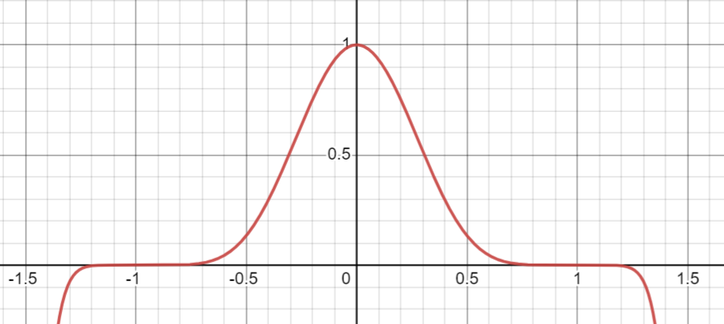

2023
\[\forall n \in \mathbb{N} \,\,\,\, \exists \alpha_n \in \mathbb{R}\,\,\,\, \left(|\alpha_n| < 1\right): \,\,\,\, n! = \sqrt{2\pi n}\left(\frac{n}{e}\right)^n \left(1 + \frac{\alpha_n}{\sqrt{n}}\right)\]
Доказательство:
По утверждению \(n! = \Gamma(n + 1) =\) по теореме \(= \displaystyle\int\limits_0^{+\infty} t^n e^{-t}dt\).
Найдем максимум функции \(t^n e^{-t}\). \(\left(t^n e^{-t}\right)’ = n t^{n - 1} e^{-t} - e^{-t} t^n = e^{-t}t^{n - 1}(n - t) \implies\) максимум в \(t = n\) и равен \(\left(\frac{n}{e}\right)^n\).
Вынесем значение в точке максимума за знак интеграла \(\displaystyle\int\limits_0^{+\infty} t^n e^{-t}dt = \left(\frac{n}{e}\right)^n \displaystyle\int\limits_0^{+\infty} \left(\frac{e}{n}\right)^n t^n e^{-t}dt = \left(\frac{n}{e}\right)^n \displaystyle\int\limits_0^{+\infty} \left(\frac{t}{n}\right)^n e^{n - t}dt = \left(\frac{n}{e}\right)^n \displaystyle\int\limits_0^{+\infty} e^{n \cdot \ln\left(\frac{t}{n}\right) + n - t}dt\)
Обозначим \(I_n = \displaystyle\int\limits_0^{+\infty} e^{n \cdot \ln\left(\frac{t}{n}\right) + n - t}dt\).
Сделаем замену \(-x^2 = n \cdot \ln\left(\frac{t}{n}\right) + n - t \implies x^2 = (t - n) - n\cdot \ln\left(\frac{t}{n}\right) = (t - n) - n\cdot \ln(1 + \frac{t - n}{n}) \implies\)
\(\implies\frac{x^2}{n} = u - \ln(1 + u), \,\,\,\, u = \frac{t - n}{n}\).
\(\ln(1 + u) = u - \frac{u^2}{2!\cdot (1 +\theta u)^2}, \,\,\,\, |\theta| < 1 \implies \frac{x^2}{n} = \frac{u^2}{2!\cdot (1 +\theta u)^2} \implies \frac{x}{\sqrt{n}} = \frac{u}{\sqrt{2}\cdot(1 + \theta u)} \implies\)
\(\implies\sqrt{\frac2n}\cdot x + \sqrt{\frac2n}\cdot x \theta u = u \implies u = \sqrt{\frac2n}\cdot \frac{x}{1 - \sqrt{\frac2n}\cdot \theta x} \implies u = \frac{\sqrt{2}x}{\sqrt{n} - \sqrt{2}\theta x}\)
\(\frac1u = \frac{1}{\left(\frac{t - n}{t}\right)} - 1 \implies \frac{1}{\left(\frac{t - n}{t}\right)} = \frac{\sqrt{n} - \sqrt{2}\theta x}{\sqrt{2}x} + 1 = \frac{\sqrt{n} + \sqrt{2}x(1 - \theta)}{\sqrt{2}x}\)
\(2x dx = dt - \frac{n}{t}dt = dt \left(\frac{t - n}{t}\right) = dt \frac{\sqrt{2}x}{\sqrt{n} + \sqrt{2}x(1 - \theta)} \implies dt = (\sqrt{2n} + 2x(1-\theta)) dx\)
\[I_n = \displaystyle\int\limits_0^{+\infty} e^{n \cdot \ln\left(\frac{t}{n}\right) + n - t}dt = \displaystyle\int\limits_{-\infty}^{+\infty} e^{-x^2}\left(\sqrt{2n} + 2x(1-\theta)\right) dx=\] \[= \sqrt{2n\pi} + 2\displaystyle\int\limits_0^{+\infty} e^{-x^2}2x(1-\theta) dx= \sqrt{2\pi n} + \displaystyle\int\limits_0^{+\infty} e^{-x^2}(1-\theta(x)) d(x^2)=\] \[= \sqrt{2\pi n} + 2\displaystyle\int\limits_0^{+\infty} e^{-t} dt - 2\displaystyle\int\limits_0^{+\infty} e^{-x^2}\theta(x) d(x^2)= \sqrt{2\pi n} + 2 - \beta_n =\sqrt{2\pi n}\left(1 + \frac{2 - \beta_n}{\sqrt{2\pi n}}\right) = \sqrt{2\pi n}\left(1 + \frac{\alpha_n}{\sqrt{n}}\right) \,\,\,\,\blacksquare\]
Определение: (второй интеграл Эйлера)
\[B(\alpha, \beta) = \displaystyle\int\limits_0^1 t^{\alpha - 1}(1 - t)^{\beta - 1}dt, \,\,\,\, \alpha > 0, \,\,\,\, \beta > 0\]
Утверждение: \[B(\alpha, \beta) = B(\beta, \alpha)\]
Доказательство: \(t = 1 - x \,\,\,\,\blacksquare\)
Теорема: \[B(\alpha + 1, \beta) = \frac{\alpha}{\alpha + \beta}\cdot B(\alpha, \beta)\]
Доказательство: по частям
Теорема: (связь бета и гамма-функций)
\[B(\alpha, \beta) = \frac{\Gamma(\alpha)\cdot \Gamma(\beta)}{\Gamma(\alpha + \beta)}\]
Доказательство:
Пусть \(t = \frac{1}{1 + x} \implies 1 - t = \frac{x}{1 + x}\) и \(dt = -\frac{dx}{1 + x}^2\).
\[B(\alpha, \beta) = \displaystyle\int\limits_0^1 t^{\alpha - 1}(1 - t)^{\beta - 1}dt = \displaystyle\int\limits_0^{+\infty} \frac{x^{\beta - 1}}{(1 + x)^{\alpha + \beta}}dx\]
Делаем замену \(x = (t + 1)y\) в \(\Gamma(\alpha + \beta)\). Получим \(\Gamma(\alpha + \beta) = \displaystyle\int\limits_0^{+\infty} (t + 1)^{\alpha + \beta}\cdot y^{\alpha + \beta - 1}e^{-(t + 1)y}dy\).
\[B(\alpha, \beta)\cdot \Gamma(\alpha + \beta) = \displaystyle\int\limits_0^{+\infty} \frac{x^{\beta - 1}}{(1 + x)^{\alpha + \beta}}\Gamma(\alpha + \beta)dx = \displaystyle\int\limits_0^{+\infty} \frac{x^{\beta - 1}}{(1 + x)^{\alpha + \beta}}\left(\displaystyle\int\limits_0^{+\infty} (t + 1)^{\alpha + \beta}\cdot y^{\alpha + \beta - 1}e^{-(t + 1)y}dy\right)dx=\] \[=\displaystyle\int\limits_0^{+\infty} y^{\alpha - 1}e^{-y}\left(\displaystyle\int\limits_0^{+\infty} (ty)^{\beta - 1}e^{-ty}d(ty)\right)dy = \Gamma(\beta)\cdot \Gamma(\alpha) \,\,\,\,\blacksquare\]
Тут используется теорема о изменении порядка интегралов, а для нее необходима неотрицательность и непрерывность, поэтому рассуждения выше для \(\alpha > 1\) и \(\beta > 1\).
Теорема: (Вейерштрасса о приближении многочленами) Пусть \(f(x) \in C[a, b] \,\,\,\, \exists \{P_n(x)\}_{n = 1}, \,\,\,\, P_n\) – многочлены, такие что \(P_n(x) \overset{[a, b]}{\rightrightarrows} f(x)\).
Доказательство:
Без ограничения общности пусть \(f(x) \in C[0, 1]\) и \(f(0) = f(1) = 0\), так как отрезок \([a, b]\) можно перевести в отрезок \([0, 1]\) линейной заменой, то есть многочлен останется многочленом. Пусть \(f(x) \equiv 0, \,\,\,\, x \not\in [0, 1] \implies f(x) \in C(\mathbb{R})\).
Пусть \(\{c_n\}_{n = 1}^{\infty}: \,\,\,\, c_n \displaystyle\int\limits_{-1}^1 (1 - x^2)^ndx = 1\).

Оценим \(c_n:\) \(1 = c_n 2 \displaystyle\int\limits_0^1 (1 - x^2)^ndx \geqslant 2c_n \displaystyle\int\limits_0^{\frac1{\sqrt{n}}} (1 - x^2)^n dx \geqslant 2c_n \displaystyle\int\limits_0^{\frac1{\sqrt{n}}} (1 - nx^2) dx=\) \(= 2 c_n \left(\frac1{\sqrt{n}} - \frac{1}{3\sqrt{n}}\right) = \frac43\cdot \frac{c_n}{\sqrt{n}} > \frac{c_n}{\sqrt{n}} \implies c_n < \sqrt{n}\). 1
\[\forall \delta > 0 \,\,\,\, c_n(1- x^2)^n \leqslant c_n(1 - \delta^2)^n \overset{n \to \infty}{\to} 0 \implies c_n(1- x^2)^n \overset{[-1,-\delta]\cup[\delta, 1]}{\rightrightarrows} 0\]
\[f_n(x) = c_n\cdot\displaystyle\int\limits_{-1}^1 f(x + t)(1- t^2)^ndt\] \[|f_n(x) - f(x)| = \left|c_n\cdot\displaystyle\int\limits_{-1}^1 f(x + t)(1- t^2)^ndt - f(x)c_n\displaystyle\int\limits_{-1}^1 (1 - x^2)^ndx\right|=\] \[= c_n\left|\displaystyle\int\limits_{-1}^1 (1- t^2)^n (f(x + t) - f(x))\right| \leqslant c_n\displaystyle\int\limits_{-1}^{-\delta} (1- t^2)^n |f(x + t) - f(x)|dt+\] \[+ c_n\displaystyle\int\limits_{\delta}^1 (1- t^2)^n |f(x + t) - f(x)|dt+\] \[+ c_n \displaystyle\int\limits_{-\delta}^{\delta} (1- t^2)^n |f(x + t) - f(x)|dt \leqslant \varepsilon + 2M\varepsilon \implies\] \[\implies f_n(x) \overset{[0, 1]}{\rightrightarrows}f(x)\] \[f_n(x) = c_n\cdot \displaystyle\int\limits_x^{1-x} f(x + t)(1-t^2)^ndt \overset{\tau = x+t}{=} c_n\cdot \displaystyle\int\limits_0^1 f(\tau)(1 - (x - \tau)^2)^nd\tau\]
Это назвается ядро сингулярного разложения.↩︎